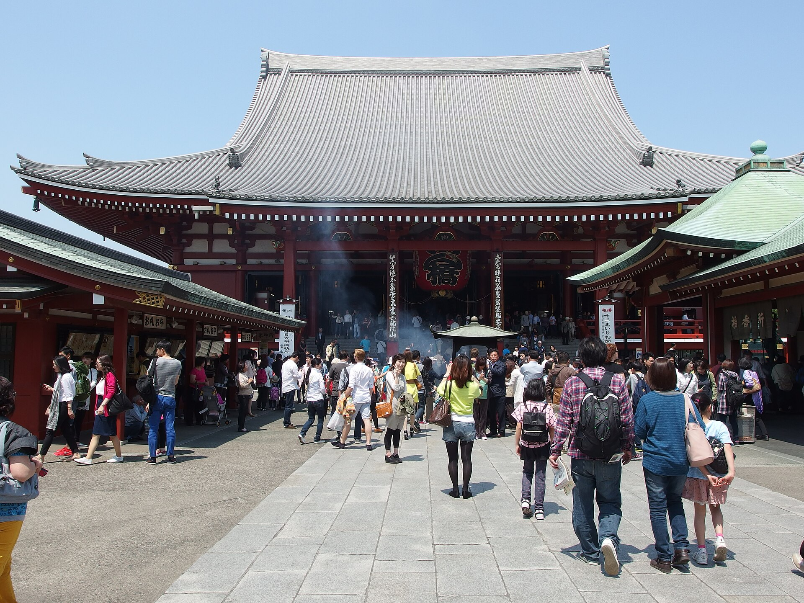
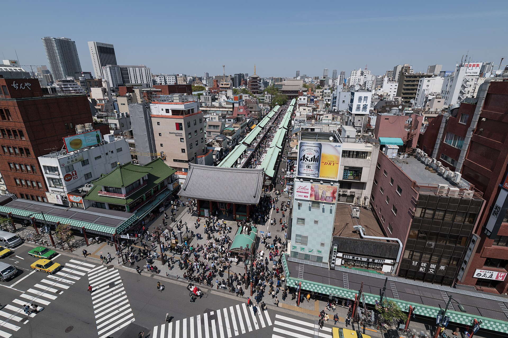
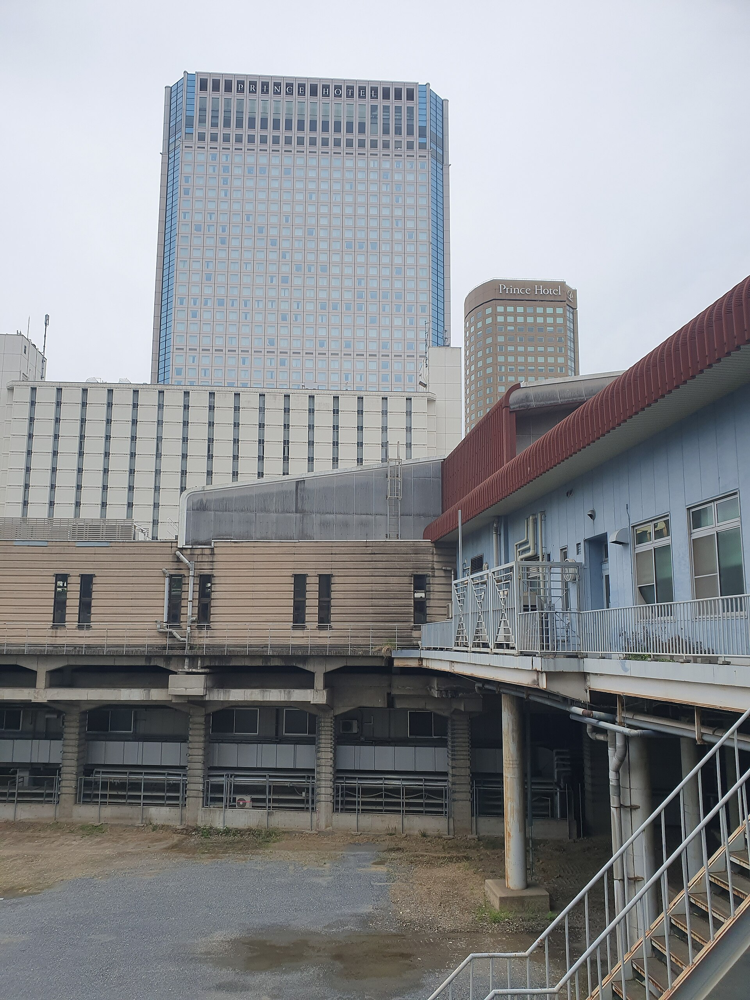

4박 5일 일정표
※ 본 일정표는 안내 초안이며, 항공·현지 기상 및 교통 상황에 따라 유연하게 진행됩니다.
| 일자/지역 | 상세 일정 및 관광지 | 식사/숙박 |
|---|---|---|
| 1일차 9/28(월) 인천 나리타 도쿄 |
오전 인천 출발 → 나리타 도착 · 도쿄 이동
🏨 시나가와 프린스 호텔 또는 동급 (4성급)
|
조 불포함
중 기내식
석 야키니쿠(무제한)
|
| 2일차 9/29(화) 도쿄 공식 |
전일 공식 시찰 — 항만·시장·해양대학
🏨 상동 (동일 호텔 연박)
|
조 호텔식
중 일정식
석 샤브샤브
|
| 3일차 9/30(수) 치바 인자이 |
전일 치바 인자이 — 스마트팜 시찰
🏨 상동 (동일 호텔 연박)
|
조 호텔식
중 회전스시
석 한식
|
| 4일차 10/1(목) 요코하마 |
전일 요코하마 — 항구·JAMSTEC
🏨 상동 (동일 호텔 연박)
|
조 호텔식
중 현지식
석 카이세키
|
| 5일차 10/2(금) 도쿄 나리타 인천 |
오전 도심 답사 · 오후 귀국
|
조 호텔식
중 기내식
석 불포함
|
[System Powered by SYNCVERSE] 본 스마트 가이드북은 공식연수를 위해 SYNCVERSE · GLOBAL WELLNESS NETWORK의 트래블 테크 기술로 제작되었습니다. · https://www.syncverse.co.kr/
이번 여정의 핵심 포인트
LAND ONLY · 노옵션 · 전용차량
전용차량(45인승) 편성, 시나가와 프린스 또는 동급 4성급 2인1실. 식사·입장료·기사/스루가이드·기사&가이드 팁 포함. 노쇼핑·노옵션 일정입니다.
항만·시장·해양대학·스마트팜 공식시찰
도쿄 항만국 항만 재생 브리핑, 도요스 시장 유통망 시찰, 도쿄해양대학 방문, 치바 야마타네 정미공장 및 치바대학 식물공장 스마트팜 시찰.
요코하마 미나토미라이 · JAMSTEC
미나토미라이 시설 견학, 아카렌카 창고, 야마시타 공원을 거쳐 일본해양연구개발기구(JAMSTEC)를 자유 견학합니다.
한눈에 보는 여행지
도쿄 시내·항만·치바 스마트팜·요코하마 항구를 잇는 공식 연수 여정입니다.
도쿄 — 항만·시장·해양대학
아사쿠사 센소지·나가미세로 시작해 도쿄 항만국·도요스 시장·도쿄해양대학 공식 시찰을 이어갑니다. 9월 말은 낮 기온 25°C 내외의 쾌적한 초가을입니다.
치바 인자이 — 스마트팜·정미공장
야마타네 정미공장(친환경 유통·가공)과 치바대학 식물공장(스마트팜)을 방문해 첨단 농업 인프라를 시찰합니다.
요코하마 — 미나토미라이·JAMSTEC
미나토미라이·아카렌카·야마시타 공원에서 항구 도시의 매력을 즐기고, 일본해양연구개발기구(JAMSTEC)를 자유 견학합니다.
포함 · 불포함 안내
포함: 호텔(2인1실), 전용차량(45인승), 식사, 입장료, 기사/스루가이드, 기사&가이드 팁.
불포함: 항공료, TAX 및 유류세, 여행자보험, 매너팁(+기타팁), 기타개인경비.
참고 항공 스케줄
본 패키지는 LAND ONLY입니다. 아래 항공 일정은 참고용이며 항공료는 불포함입니다.
출국 · 9/28 (월) · 참고
인천 나리타
- 항공편 대한항공 KE703
- 인천 출발 10:10 (ICN)
- 나리타 도착 12:40 (NRT)
- 비행시간 약 2시간 30분
귀국 · 10/2 (금) · 참고
나리타 인천
- 항공편 대한항공 KE704
- 나리타 출발 14:00 (NRT)
- 인천 도착 16:30 (ICN)
- 비행시간 약 2시간 30분
여정 동선 지도
전체 탭에서는 항공 노선(인천↔나리타)을, 일자별 탭에서는 현지 동선을 확대하여 표시합니다.
✈️ 전체 보기: 대한항공 항공 노선 (KE703 · KE704) — LAND ONLY 참고
※ 상기 지도는 주요 랜드마크 기준이며 실제 세부 이동과 다를 수 있습니다.
일자별 상세 일정표
인천/나리타·도쿄 — 아사쿠사·나가미세
10:10 인천 출발 (대한항공 KE703) 참고 항공
12:40 나리타 공항 도착 · 가이드 미팅
입국수속 후 도쿄 이동 (약 1시간 20분)
아사쿠사 센소지 (관음사)
도쿄에서 가장 오래된 사찰로 아사쿠사를 대표합니다. 웅장한 카미나리몬(뇌문)과 경내를 관람합니다.

나가미세 산책
센소지로 이어지는 250m의 전통 상점가. 닝교야키·인형 등 전통 기념품을 구경합니다.

호텔 체크인 · 석식 야키니쿠(무제한)
시나가와 프린스 호텔 또는 동급 (4성급)
숙박 안내

시나가와 프린스 호텔 또는 동급
Shinagawa Prince Hotel · 4성급 동급 가능 · 참고 사진은 시나가와 역·호텔 지구 전경
- 2인1실 · 전용차량(45인승) 연계
부킹 상황에 따라 동급 호텔로 안내될 수 있습니다. - 시나가와 역세권 (도쿄 남부)
도심·요코하마·치바 동선에 유리한 위치 (담당자 호텔 공식컷 대기 가능) - 일본 호텔 안내
일부 호텔에서 일회용 어메니티 제공이 제한될 수 있습니다. 개인 세면도구를 준비해 주세요.
해외 스마트 여행비서
SYNCVERSE가 제공하는 실시간 맞춤형 현지 정보입니다.
도쿄 실시간 날씨
데이터 연동 중...
7일 예보 (스크롤)
체감 환율 (JPY)
수수료 1.5% 반영참고용 · 현지 환전소·카드 수수료와 다를 수 있습니다.
빠른 계산기 (JPY → KRW)
1:1 현지 물가 체감 비교 (참고)
원클릭 일본어 생존 회화
식당, 이동, 긴급 상황 시 당황하지 마세요.
일본어 문장을 화면에 바로 보여줄 수 있습니다.
여행 전 짐 챙기기
필수 준비물
자유 메모장
안심 비상 연락망
여행 중 긴급 상황 시 즉시 문의해 주세요.
SYNCVERSE 상황실
담당 매니저 및 현지 가이드 연결
주일본대한민국대사관
대표 ☎ +81-3-3452-7611
도쿄도 미나토구 미나미아자부 1-2-5
영사콜센터 (24시간)
☎ +82-2-3210-0404
디지털 전환(DX)을 통한
친환경 여행 문화
본 행사는 스마트 가이드북 도입을 통해 종이 인쇄를 줄이고, 환경 보호 실천에 동참합니다. (14명 기준)
종이 절감
112장
탄소 감소
0.53kg
물 절약
1,050L